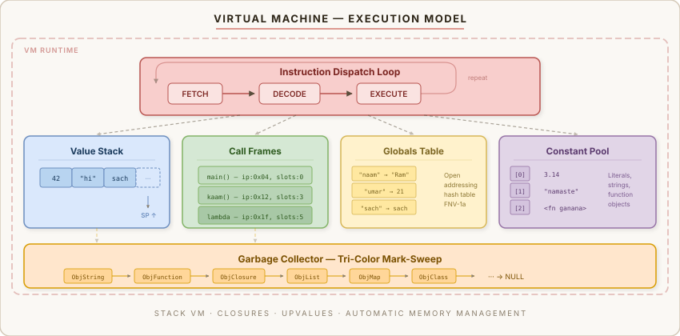
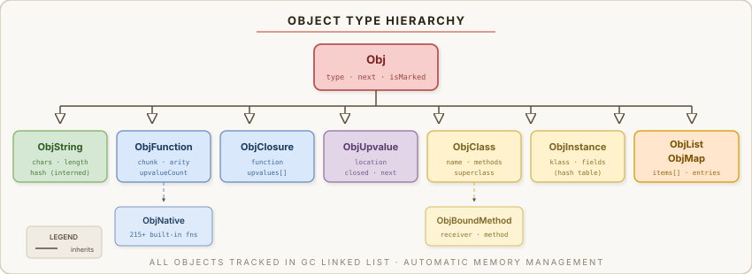

Language Specification
Formal specification of the Rampyaaryan language — Version 3.5.2
Contents
1. Lexical Structure
1.1 Tokens
| Token Type | Pattern | Examples |
|---|---|---|
| Identifiers | [a-zA-Z_][a-zA-Z0-9_]* | naam, my_var, _x |
| Numbers | Integer or float | 42, 3.14, -7 |
| Strings | Double-quoted with escapes | "hello", "line\n" |
| Comments | # or // (single-line) | # yeh comment hai |
1.2 Keywords
| Keyword | English Equivalent | Usage |
|---|---|---|
maano | let / var | Variable declaration |
likho | Print output | |
pucho | input | Read user input |
agar | if | Conditional |
warna | else | Else branch |
warna agar | else if | Else-if branch |
jab tak | while | While loop |
har | for | For loop |
kaam | function | Function definition |
wapas do | return | Return from function |
ruko | break | Break from loop |
agla | continue | Skip to next iteration |
sach | true | Boolean true |
jhooth | false | Boolean false |
khali | null | Null value |
aur | and | Logical AND |
ya | or | Logical OR |
nahi | not | Logical NOT |
1.3 Operators
| Category | Operators |
|---|---|
| Arithmetic | + - * / % ** |
| Comparison | == != > < >= <= |
| Bitwise | & | ^ ~ << >> |
| Logical | aur ya nahi |
| Assignment | = += -= *= /= |
1.4 Escape Sequences
| Sequence | Character |
|---|---|
\n | Newline |
\t | Tab |
\\ | Backslash |
\" | Double quote |
2. Data Types
| Type | Hinglish Name | Examples | Description |
|---|---|---|---|
| Number | sankhya | 42, 3.14, -7 | 64-bit IEEE 754 double |
| String | shabd | "hello", "namaste" | Immutable, interned, UTF-8 |
| Boolean | haan_na | sach, jhooth | True or false |
| Null | khali | khali | Absence of value |
| List | suchi | [1, 2, 3] | Dynamic array, mixed types |
| Function | kaam | kaam f(x) {...} | First-class, closures |
| Map/Dict | shabdkosh | {"key": "val"} | String-keyed hash map |
3. Statements
3.1 Variable Declaration
maano <name> = <expression>Declares and initializes a variable. Variables are dynamically typed.
3.2 Print Statement
likho <expression> [, <expression>]*Multiple expressions are printed space-separated with a trailing newline. A ; separator prints without newline.
3.3 If Statement
agar <condition> {
<statements>
} warna agar <condition> {
<statements>
} warna {
<statements>
}3.4 While Loop
jab tak <condition> {
<statements>
}3.5 For Loop
har <init>; <condition>; <update> {
<statements>
}3.6 Function Declaration
kaam <name>(<params>) {
<statements>
wapas do <expression>
}3.7 Break & Continue
ruko # break out of loop
agla # skip to next iteration4. Expressions
4.1 Operator Precedence (low to high)
| Level | Operators | Description |
|---|---|---|
| 1 | ya | Logical OR |
| 2 | aur | Logical AND |
| 3 | | | Bitwise OR |
| 4 | ^ | Bitwise XOR |
| 5 | & | Bitwise AND |
| 6 | == != | Equality |
| 7 | > < >= <= | Comparison |
| 8 | << >> | Bit shifts |
| 9 | + - | Addition / subtraction |
| 10 | * / % | Multiplication / division |
| 11 | ** | Exponentiation |
| 12 | ~ nahi - | Unary: bitwise NOT, logical NOT, negate |
| 13 | () [] . | Call, index, member access |
4.2 Function Calls
<function>(<args>)4.3 List Indexing
<list>[<index>] # read
<list>[<index>] = <value> # write4.4 Input Expression
pucho(<prompt>)5. Closures
Functions capture variables from enclosing scopes. This enables powerful patterns like counters, iterators, and factory functions.
kaam counter() {
maano n = 0
kaam badhao() {
n = n + 1
wapas do n
}
wapas do badhao
}
maano c = counter()
likho c() # 1
likho c() # 2
likho c() # 3badhao captures the variable n from the outer function via an "upvalue". The VM uses a dedicated upvalue mechanism (similar to Lua/clox) to track captured variables even after the enclosing function returns.
6. Truthiness
| Value | Truthy? |
|---|---|
jhooth | Falsy |
khali | Falsy |
0 | Falsy |
"" (empty string) | Falsy |
[] (empty list) | Falsy |
| Everything else | Truthy |
7. String Operations
| Operation | Syntax | Result |
|---|---|---|
| Concatenation | "a" + "b" | "ab" |
| Repetition | "ha" * 3 | "hahaha" |
| Indexing | "hello"[0] | "h" |
| Length | lambai("hello") | 5 |
8. Map Literals
Maps can be created with literal syntax. Keys must be strings. Values can be any type.
maano m = {"key1": value1, "key2": value2}
m["key"] # read
m["new_key"] = value # write9. Bitwise Operations
Bitwise operators work on integer values:
a & b # AND
a | b # OR
a ^ b # XOR
~a # NOT (complement)
a << n # Left shift
a >> n # Right shift10. Runtime Architecture


Compilation
Single-pass Pratt parser compiles source code into bytecode. No AST is generated — the parser emits bytecode directly.
Execution
Stack-based virtual machine interprets bytecode using a dispatch loop with computed gotos (where available).
Memory
Mark-sweep garbage collector with automatic memory management. Objects are tracked in a linked list.
Strings
All strings are interned using FNV-1a hashing. String equality is O(1) pointer comparison.
Variables
Global variables use a hash table. Local variables use dedicated stack slots for maximum performance.
Functions
First-class closures with upvalue tracking. Supports recursion, higher-order functions, and currying.